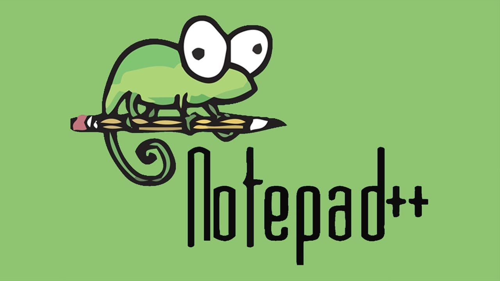

Notepad++
Notepad++ — это бесплатный текстовый редактор с открытым исходным кодом, популярный среди разработчиков благодаря своей легковесности и простоте использования. Он поддерживает множество языков программирования и предлагает широкий набор инструментов для редактирования кода.
Особенности:
- Легковесность и быстродействие:
Быстрая загрузка и работа даже на старых машинах.
- Подсветка синтаксиса:
Поддержка множества языков программирования с возможностью кастомизации подсветки.
- Мульти-документный интерфейс:
Работа с несколькими файлами в одном окне с вкладками.
Популярные плагины:
- NppFTP:
Позволяет редактировать файлы напрямую на сервере через FTP, что упрощает управление проектами и удаленную работу
- XML Tools:
Набор инструментов для работы с XML-файлами, включая форматирование, валидацию и преобразование.